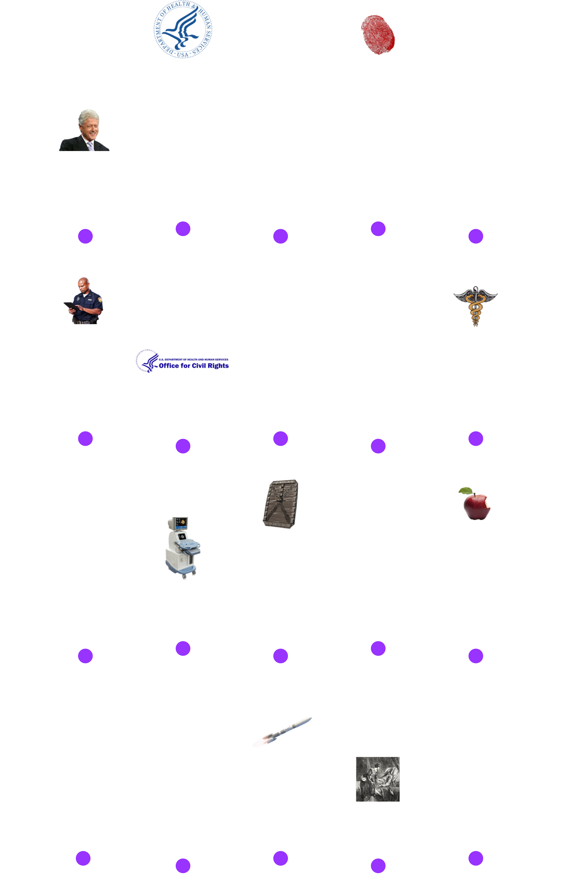
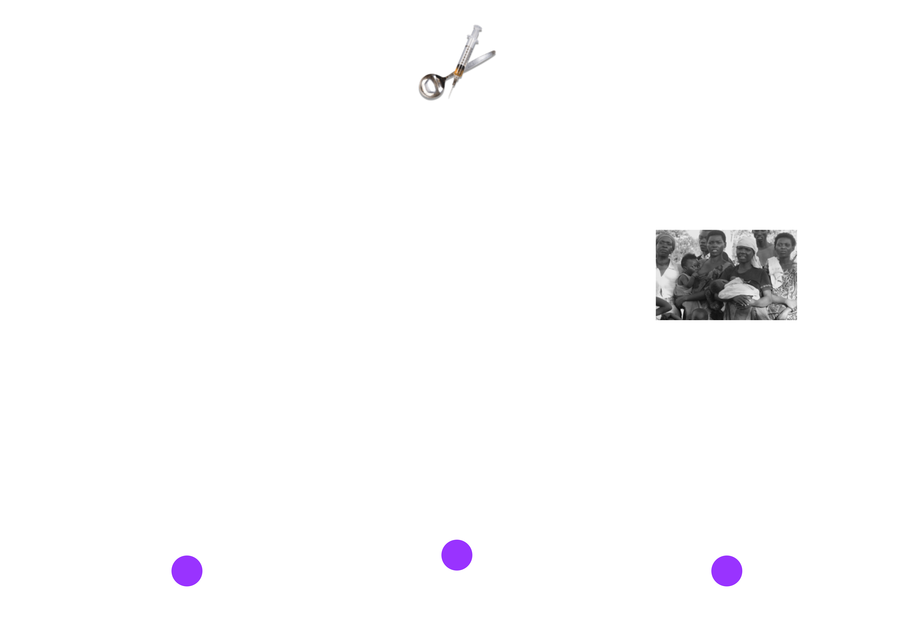
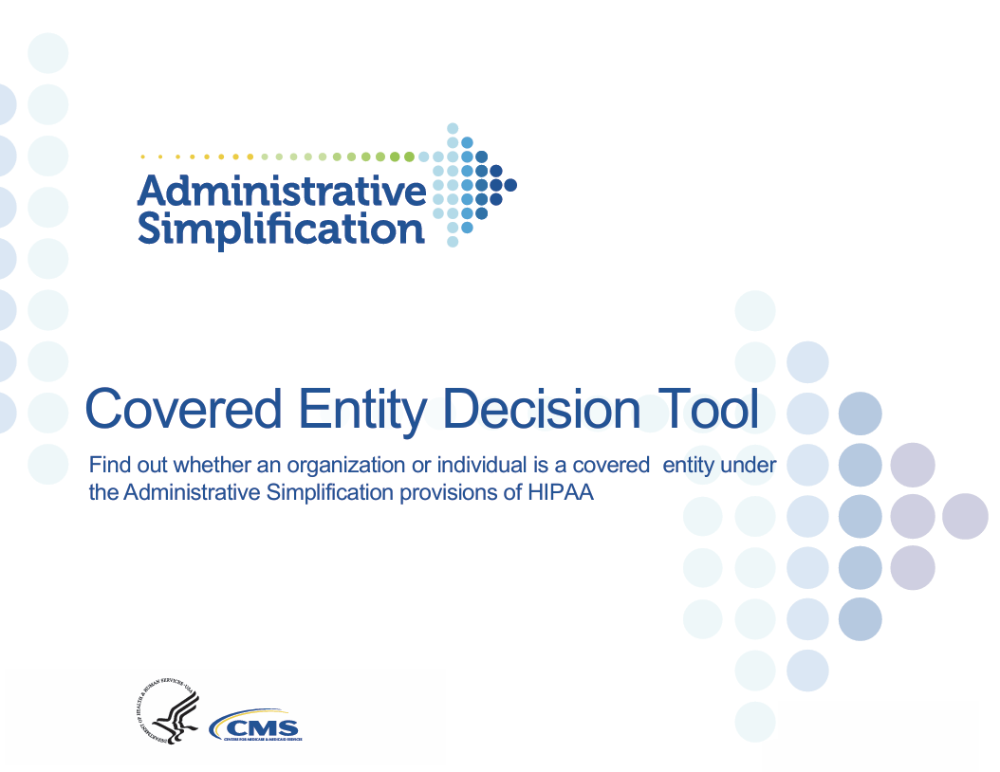

Similar to my previous post regarding RFC 6598 and Network Address Translation (NAT), when I was still studying for my master’s degree in Information Security (InfoSec), I was tasked to present the Health Insurance Portability and Accountability Act (HIPAA) of 1996 and how it relates to InfoSec. Being in this industry we are often tasked with safeguarding sensitive personal information, and this may include protected health information (PHI). HIPAA of 1996 establishes a standard for protecting sensitive health information of patients from unauthorized disclosures [1]. However, understanding HIPAA of 1996 and how to comply with it as an InfoSec professional can be daunting due to its scope and complexity. In this blog post, I will try to make HIPAA of 1996 digestible and highlight available tools and resources to assist professionals in their journey to compliance. I hope this blog post can become a single-page reference or guide in understanding HIPAA in the context of InfoSec.
Overview of the HIPAA of 1996
The HIPAA of 1996 (hereinafter known as “HIPAA”) was signed or enacted into Law by President Bill Clinton on August 21, 1996 [2]. The act became Public Law 104-191, which means it was passed during the 104th Congress with 191 as its numerical designation [3].
In summary, according to the long title, the HIPAA of 1996 is:
“An act to amend the Internal Revenue Code of 1986 to improve portability and continuity of health insurance coverage in the group and individual markets, to combat waste, fraud, and abuse in health insurance and health care delivery, to promote the use of medical savings accounts, to improve access to long-term care services and coverage, to simplify the administration of health insurance, and for other purposes.”
At a glance, the long title does not specify anything about the security or privacy of PHI as the initial purposes of HIPAA were Portability of Health Coverage and Administrative Simplification. Over time, the act was continuously updated, including the addition of security-related rules.
Under HIPAA, Title I ensures health insurance portability by providing continuous health insurance coverage for employees when in between or losing jobs. Additionally, Title 1 protects employees with pre-existing conditions from discrimination [4]. This blog post will not dive into Title I as it does not pertain to the security and privacy of PHI. However, the Centers for Medicare & Medicaid Services (CMS) has a great resource outlining the specific circumstances to become eligible for HIPAA’s health coverage portability, including examples [5].
The Administrative Simplification in a nutshell ensures consitency in electronic communication across different U.S. healthcare systems by mandating standards, code sets, and identifiers, and thus improving efficiency [7]. Administrative Simplification and the rest of Title II (subtle foreshadowing) are discussed further in this post.
Brief Timeline and History of HIPAA
Changes have been made to HIPAA since its enactment in 1996, with the latest Notice of Proposed Rulemaking (NPRM) this 2024, strengthening the reproductive healthcare privacy under the HIPAA Privacy Rule [8]. An NPRM is the official document announcing and explaining the federal agency’s plan to address a problem or accomplish a goal, while providing the public an opportunity to submit comments; NPRMs are published in the Federal Register [9].
Fig. 1 below outlines the important historical HIPAA events for InfoSec professionals, including the introduction of different security and privacy rules: Security Rule, Privacy Rule, Enforcement Rule, and Breach Notification Rule
 Fig. 1. HIPAA History Timeline
Following the timeline three (3) NPRMs were added to HIPAA, shown in Fig. 2 below, that are relevant to InfoSec at the time of writing [10]:
 Fig. 2. HIPAA NPRMs
On April 22, 2024, the Office for Civil Rights (OCR), issued the Final Rule for the privacy of reproductive health, entitled HIPAA Privacy Rule to Support Reproductive Health Care Privacy [11].
Titles of HIPAA
HIPAA has five (5) Titles:
- Title I - Health Care Access, Portability, and Renewability
- Title II - Preventing Health Care Fraud and Abuse; Administrative Simplification; Medical Liability Reform
- Title III - Tax-related Provisions
- Title IV - Application and Enforcement of Group Health Plan Requirements
- Title V - Revenue Offsets
As InfoSec professionals, we will primarily concern ourselves with Title II. This title includes the Administrative Simplication, Security, and Privacy Rules [12]. The rest of the blog post basically deep dives into Title II in the context of InfoSec.
Code of Federal Regulations Governing HIPAA Title II
[IMPORTANT!]: Throughout this post, I will be referencing the Title 45 of the Code of Federal Regulations (CFR) or 45 CFR. Title II of HIPAA is primarily implemented under 45 CFR Parts 160, 162, and 164, specifically within Subchapter C - Administrative Data Standards and Related Requirements [12]:
- Part 160 - General Administrative Requirements
- Part 162 - Administrative Requirements (Electronic Transactions and Code Sets)
- Part 164 - Security and Privacy
A good resource to navigate through the different parts of 45 CFR Subchapter C is using Cornell Law School's Administrative Data Standards and Related Requirements webpage.
A Deep Dive Into the HIPAA Administrative Simplification Rules
CMS defines Administrative Simplification as the set of HIPAA requirements that govern how covered entities conduct electronic, administrative transactions and set standards for transmitting PHI [13]. The definition sheds some light on how security and privacy can come into play in HIPAA.
Covered Entities
Covered Entities are simply individuals and organizations that need to comply with HIPAA, which includes health plans, health care providers, and health care clearinghouses [14].
A Covered Entity Decision Tool, as shown in Fig. 4 below, is provided by the CMS to help indivuals and organizations determined whether they are a covered entity [15].
 Fig. 3. CMS Covered Entity Decision Tool
Health Plans
Health Plans are individual or group plans that provide or pay the cost of medical care, including [2]:
- Health insurance companies
- HMOs or health maintenance oraganizations
- Employer-sponsored health plans
- Government programs that pay for health care (i.e., Medicare, Medicaid, and military and veterans’ health programs)
Exception: Health plans with less than 50 participants and administered solely by the employerer is not considered a covered entity.
Health Care Providers
Health Care Providers any person or organization that provides medical or health-related services, and furnishes, bills, or is paid for health care in the normal course of business [16]. A health care provider becomes a covered entity when it electronically transmits HIPAA Transactions and Code Rule Sets [14]. These providers include, but are not limited to:
- Doctors
- Clinics
- Psychologists
- Dentists
- Chiropractors
- Nursing homes
- Pharmacies
Health Care Clearninghouses
Health Care Clearinghouses processes health information received from one entity in a nonstandard format to a standard transaction, and vice versa [17].
Business Associates
Business Associates (BA) are essentially third-party service providers of covered entities that use or disclose identifiable PHI as part of their function, service, or activity [18]. Under the Security Rule and Privacy Rule of HIPAA, covered entities are required to obtain written Business Associate Agreements (BAA) or contracts that provides satisfactory assurance that the BA will appropriately safeguard the PHI. This post will expand on the BAA under the Security Rule and Privacy Rule sections.
References
- CDC, Health Insurance Portability and Accountability Act of 1996 (HIPAA), cdc.gov, https://www.cdc.gov/phlp/php/resources/health-insurance-portability-and-accountability-act-of-1996-hipaa.html (accessed November 02, 2024)
- U.S. Department of Health and Human Services, Summary of the HIPAA Privacy Rule, hhs.giv, https://www.hhs.gov/hipaa/for-professionals/privacy/laws-regulations/index.html (accessed November 02, 2024)
- United States Senate, Laws and Acts, senate.gov, https://www.senate.gov/pagelayout/legislative/one_item_and_teasers/Laws_and_Acts_page.htm (accessed November 02, 2024)
- American Speech-Language-Hearing Association, Health Insurance Portability and Accountability Act, asha.org, https://www.asha.org/practice/reimbursement/hipaa/ (accessed November 02, 2024)
- Centers for Medicare & Medicaid Services, The Health Insurance Portability and Accountability Act (HIPAA) of 1996 Helpful Tips, cms.gov, https://www.cms.gov/regulations-and-guidance/health-insurance-reform/healthinsreformforconsume/downloads/hipaa_helpful_tips_rev_1.pdf (accessed November 02, 2024)
- Steve Alder, HIPAA Explained, hipaajournal.com, https://www.hipaajournal.com/hipaa-explained/ (accessed November 03, 2024)
- AMA, HIPAA administrative simplification, ama-assn.org, https://www.ama-assn.org/practice-management/hipaa/hipaa-administrative-simplification (accessed November 03, 2024)
- Steve Alder, HIPAA Updates and HIPAA Changes in 2024, hipaajournal.com, https://www.hipaajournal.com/hipaa-updates-hipaa-changes/ (accessed November 03, 2024)
- Office of the Federal Register, A Guide to the Rulemaking Process, federalregister.gov, https://www.federalregister.gov/uploads/2011/01/the_rulemaking_process.pdf (accessed November 03, 2024)
- U.S. Department of Health and Human Services, Special Topics in Health Information Privacy, hhs.gov, https://www.hhs.gov/hipaa/for-professionals/special-topics/index.html (accessed November 03, 2024)
- U.S. Department of Health and Human Services, HIPAA and Reproductive Health, hhs.gov, https://www.hhs.gov/hipaa/for-professionals/special-topics/reproductive-health/index.html (accessed November 03, 2024)
- Cornell Law School, 45 CFR Subchapter C - SUBCHAPTER C—ADMINISTRATIVE DATA STANDARDS AND RELATED REQUIREMENTS, https://www.law.cornell.edu/cfr/text/45/chapter-A/subchapter-C (accessed November 03, 2024)
- Centers for Medicare & Medicaid Services, HIPAA Administrative Simplification Resources and FAQs, cms.gov, https://www.cms.gov/training-education/look-up-topics/hipaa-administrative-simplification-resources-and-faqs (accessed November 03, 2024)
- Centers for Medicare & Medicaid Services, Are You a Covered Entity?, cms.gov, https://www.cms.gov/priorities/key-initiatives/burden-reduction/administrative-simplification/hipaa/covered-entities (accessed November 03, 2024)
- Centers for Medicare & Medicaid Services, Covered Entity Decision Tool, cms.gov, https://www.cms.gov/Regulations-and-Guidance/Administrative-Simplification/HIPAA-ACA/Downloads/CoveredEntitiesChart20160617.pdf (accessed November 03, 2024)
- Cornell Law School, Health care provider, law.cornell.edu, https://www.law.cornell.edu/definitions/index.php?width=840&height=800&iframe=true&def_id=808782b490d63d2744ee5d9a1336d988&term_occur=999&term_src=Title:45:Chapter:A:Subchapter:C:Part:160:Subpart:A:160.103 (accessed November 03, 2024)
- Cornell Law School, Health care clearinghouse, law.cornell.edu, https://www.law.cornell.edu/definitions/index.php?width=840&height=800&iframe=true&def_id=8b76bcc5b120eabe975323d7896f0cf3&term_occur=999&term_src=Title:45:Chapter:A:Subchapter:C:Part:160:Subpart:A:160.103 (accessed November 03, 2024)
- Cornell Law School, 45 CFR § 160.103 - Definitions, law.cornell.edu, https://www.law.cornell.edu/cfr/text/45/160.103 (accessed November 03, 2024)